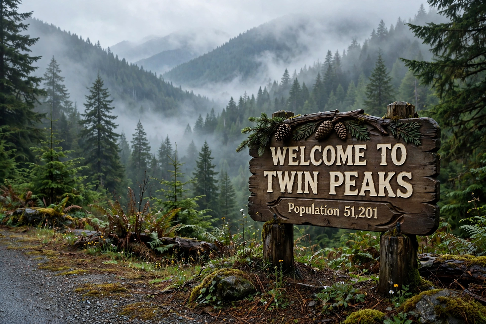

Twin Peaks

Twin Peaks is an American mystery-horror drama television series created by Mark Frost and David Lynch. It premiered on ABC on 8 April 1990 and ran for two seasons until 1991, followed by the prequel film Twin Peaks: Fire Walk with Me (1992) and a third season, Twin Peaks: The Return, on Showtime in 2017.
Premise
FBI Special Agent Dale Cooper (Kyle MacLachlan) arrives in the small logging town of Twin Peaks, Washington, to investigate the murder of homecoming queen Laura Palmer (Sheryl Lee). The investigation uncovers a town of secrets and a supernatural dimension — the Black Lodge, the entity BOB, and Cooper's doppelgänger — expressed through dream sequences, most famously the Red Room with its chevron floor, red curtains and backward-speaking Man from Another Place. Angelo Badalamenti's score and Julee Cruise's songs gave the series its distinctive dreamlike tone.
Influence
The first season was a major popular and critical success and a cultural phenomenon ("Who killed Laura Palmer?" became a national question), but ratings fell in the second season after network pressure forced the early revelation of the killer. Frequently cited among the greatest television series ever made, Twin Peaks is credited with bringing cinematic, auteur-driven and serialised surreal storytelling to prime-time television and influencing later series from The X-Files to Lost.
See also: David Lynch